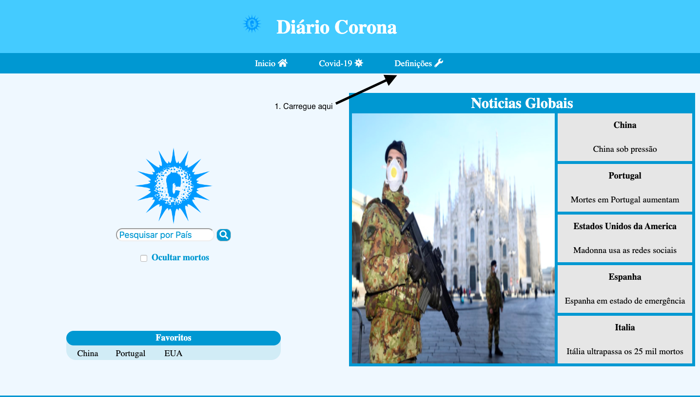
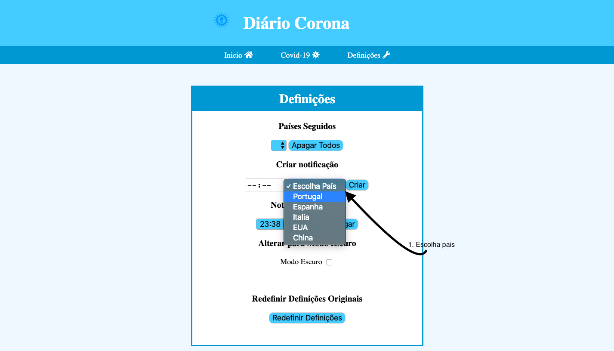
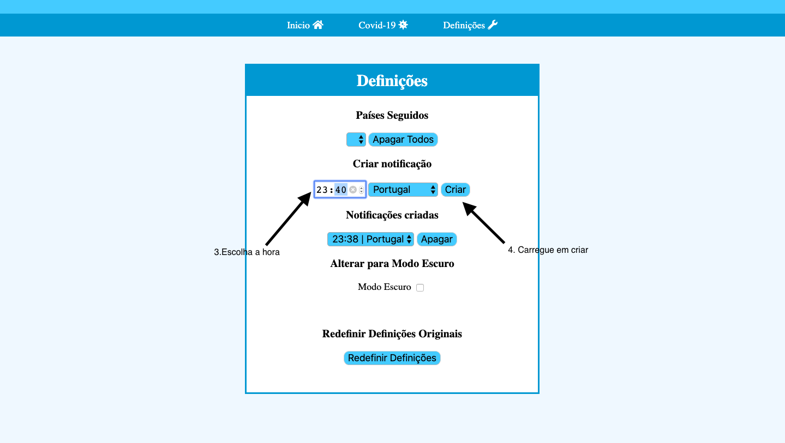
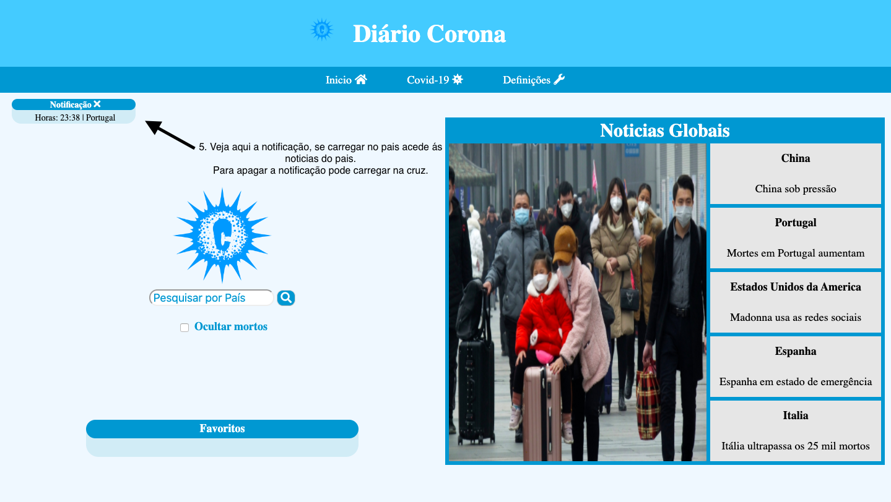

Diário Corona
Inicio
Covid-19
Definições
Para criar notificação para ver noticias de um pais a uma certa hora, aceda a Definicões:

Escolha o pais e a hora:


A sua notificação aparece no Inicio:

 Diário Corona
Diário Corona